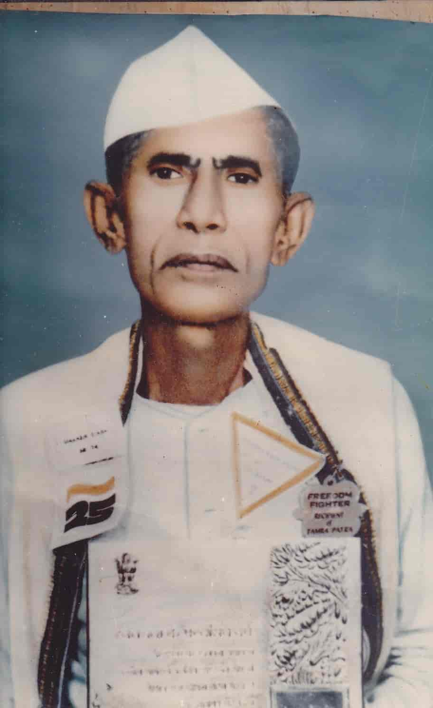
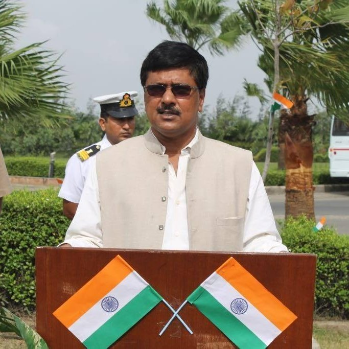

Mahavir Singh Memorial Trust was founded by Dr. Binod Kumar Singh on 28 November 1992, in his father's home village of Bishanpur, Madhubani — to carry forward the lifetime of service of the freedom fighter Mahavir Singh (1907 – 1992).महावीर सिंह स्मारक न्यास की स्थापना डॉ. विनोद कुमार सिंह ने 28 नवंबर 1992 को अपने पिता के गाँव बिशनपुर, मधुबनी में की — स्वतंत्रता सेनानी महावीर सिंह (1907 – 1992) की आजीवन सेवा को आगे बढ़ाने के लिए।

Mahavir Singh · freedom fighterBorn in 1907 in a farming family of north Bihar, the young boy Mahavir joined India's freedom struggle in his twenties — taking part in the Non-Cooperation and Quit India movements, hosting underground meetings, and thrice serving time in colonial jails.1907 में उत्तर बिहार के एक किसान परिवार में जन्मे, युवा महावीर ने बीस के दशक में भारत के स्वतंत्रता संग्राम में भाग लिया — असहयोग और भारत छोड़ो आंदोलनों में, गुप्त बैठकें आयोजित कीं, और तीन बार औपनिवेशिक जेलों में बंद रहे।
After independence, he was offered to be the First Vidhayak (MLA) from Phulparas constituency, but he refused — telling that a more learned person, Late Kashi Nath Mishra, was available for this post — and returned to his base camp in Phulparas.स्वतंत्रता के बाद उन्हें फुलपरास निर्वाचन क्षेत्र से प्रथम विधायक (MLA) बनने का प्रस्ताव मिला, परंतु उन्होंने यह कहकर अस्वीकार कर दिया कि इस पद के लिए स्व. काशी नाथ मिश्र जैसे अधिक विद्वान व्यक्ति उपलब्ध हैं — और स्वयं फुलपरास स्थित अपने आधार-स्थल लौट गए।
He spent the next four decades as a grassroot social worker and political organiser — convening Gram Sabhas, leading land-reform (Bhoodan) campaigns, and standing with the poorest of the poor of Madhubani area. When he passed away in November 1992, his comrades said the only memorial he would have wanted was another village uplifted.अगले चार दशक उन्होंने ज़मीनी समाजसेवी और राजनीतिक संगठनकर्ता के रूप में बिताए — ग्राम सभाएँ बुलाते, भू-दान (भूमि-सुधार) अभियान चलाते, और मधुबनी क्षेत्र के सबसे ग़रीब लोगों के साथ खड़े रहते। नवंबर 1992 में जब उनका देहांत हुआ, उनके साथियों ने कहा कि एकमात्र स्मारक जो वे चाहते — वह था एक और गाँव का उत्थान।
"He never owned a wristwatch. He said the village would tell him what time it was.""उन्होंने कभी कलाई-घड़ी नहीं रखी। वे कहते थे — गाँव ही बताएगा कि समय क्या है।"
— A fellow Sarvodaya worker, 1993.— एक साथी सर्वोदय कार्यकर्ता, 1993।To eradicate illiteracy and bring health, dignity and opportunity to the rural masses of north Bihar — without political or sectarian agenda.उत्तर बिहार के ग्रामीण जन-समुदाय तक स्वास्थ्य, सम्मान और अवसर पहुँचाना तथा निरक्षरता मिटाना — किसी राजनीतिक या सांप्रदायिक उद्देश्य के बिना।
A Madhubani where every child finishes school, every mother delivers safely, and every grandparent can read a letter from a grandchild without help.एक ऐसा मधुबनी जहाँ हर बच्चा विद्यालय पूरा करे, हर माँ सुरक्षित प्रसव कराए, और हर दादा-दादी अपने पोते-पोती की चिट्ठी बिना किसी की सहायता पढ़ सके।
Seva (service), Saadgi (simplicity), Sachaai (truth) and Saamuhik Shakti (collective strength) — the four words painted above our office door since 1993.सेवा, सादगी, सच्चाई और सामूहिक शक्ति — चार शब्द, जो 1993 से हमारे कार्यालय के द्वार पर लिखे हैं।
Small, steady milestones — most of them measured in classrooms opened or wells dug, not in column inches.छोटे-छोटे, स्थिर पड़ाव — अख़बारी सुर्ख़ियों में नहीं, बल्कि खुली कक्षाओं और खोदे गए कुओं में मापे गए।
Registered in Madhubani in memory of his father, the freedom fighter Mahavir Singh.अपने पिता, स्वतंत्रता सेनानी महावीर सिंह की स्मृति में मधुबनी में पंजीकृत।
A two-room community library opens in Bishanpur — the Trust's first permanent building.बिशनपुर में दो-कमरों का सामुदायिक पुस्तकालय शुरू — न्यास की पहली स्थायी इमारत।
In partnership with visiting ophthalmologists from Patna and Darbhanga.पटना व दरभंगा से आए नेत्र-विशेषज्ञों के साथ साझेदारी में।
Twelve desktop machines and a borrowed generator — our first venture into digital literacy.बारह डेस्कटॉप और एक उधार लिया जनरेटर — डिजिटल साक्षरता में पहला क़दम।
Self-help groups across 24 villages federate to access bank credit on better terms.24 गाँवों के स्वयं-सहायता समूह एकजुट होकर बेहतर शर्तों पर बैंक ऋण पाते हैं।
Door-to-door ration delivery and oxygen-concentrator loaning during the second wave.दूसरी लहर के दौरान घर-घर राशन वितरण और ऑक्सीजन कंसन्ट्रेटर सहायता।
Today: eight Rural Knowledge Centers, a mobile health van, and over 12,000 lives touched each year.आज: आठ ग्रामीण ज्ञान केंद्र, एक मोबाइल स्वास्थ्य वैन, और हर वर्ष 12,000 से अधिक जीवन प्रभावित।

Dr. Binod Kumar Singh · Founder & PresidentOn 28 November 1992, in his father's home village of Bishanpur, Madhubani, Dr. Binod Kumar Singh founded this Trust — to give his father's life of service a lasting institutional form.28 नवंबर 1992 को अपने पिता के गाँव बिशनपुर, मधुबनी में डॉ. विनोद कुमार सिंह ने इस न्यास की स्थापना की — ताकि उनके पिता की सेवा-यात्रा को एक स्थायी संस्थागत रूप मिल सके।
Born in Bishanpur and educated at Patna and JNU, Dr. Singh served the Government of India in the Indian Revenue Service (IRS) from 1987 until taking voluntary retirement in September 2019 after thirty-two years. He has chaired this Trust as its President since its founding, and devotes his post-retirement years to the rural development work it carries out across Madhubani.बिशनपुर में जन्मे और पटना तथा जे.एन.यू. में शिक्षित डॉ. सिंह ने 1987 से भारतीय राजस्व सेवा (IRS) में भारत सरकार की सेवा की और सितंबर 2019 में बत्तीस वर्षों के बाद स्वैच्छिक सेवानिवृत्ति ली। वे स्थापना से ही इस न्यास के अध्यक्ष रहे हैं और अपनी सेवानिवृत्ति के वर्ष मधुबनी में ग्राम विकास के कार्य को समर्पित कर रहे हैं।
[ Message from Dr. Binod Kumar Singh — to be added. ][ डॉ. विनोद कुमार सिंह का संदेश — शीघ्र जोड़ा जाएगा। ]
— Dr. Binod Kumar Singh · Founder & President— डॉ. विनोद कुमार सिंह · संस्थापक एवं अध्यक्षPersonal message from Dr. Singh will be added soon.डॉ. सिंह का व्यक्तिगत संदेश शीघ्र जोड़ा जाएगा।
A working board, governing the Trust since 1992. None draws a salary — day-to-day operations are run by the Secretary, under the President's leadership.एक कार्यशील मंडल, जो 1992 से न्यास का संचालन कर रहा है। किसी को वेतन नहीं — दैनिक कार्य सचिव द्वारा अध्यक्ष के नेतृत्व में होते हैं।
Son of the late Mahavir Singh. Founded the Trust in 1992 and serves as its Executive Trustee.स्व. महावीर सिंह के पुत्र। 1992 में न्यास की स्थापना की और कार्यकारी न्यासी के रूप में कार्यरत हैं।
Placeholder — please share the trustee's name, role and a one-line bio.
Placeholder — please share the trustee's name, role and a one-line bio.
Placeholder — please share the trustee's name, role and a one-line bio.